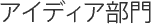
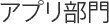

エントリー部門
本チャレンジではコンテストの審査対象となるデータセット部門・アイデア部門・アプリケーション部門・ビジュアライゼーション部門・基盤技術部門の5部門の募集を行います。
- データセットは新規に作成したものだけでなく、既存のデータをオープンデータとして使い易いように加工したものも応募できます。
- データセットはCSV、Execel、JSON、RDFのいかなるフォーマットの応募でも可能です。
- データセットの応募では必ず著作権の指定を行って下さい。データセットの著作者または製作者が応募者以外の個人、団体である場合は、応募フォームにおいて著作者または製作者の名称を、著作権など権利規定が公開されている場合には、そのURLを記述してください。
- 既に応募されているデータセット（以降 公開データセット」）を再利用した応募も可能です。
公開データセットを再利用する場合の応募対象は以下の通りです。- 公開データセットに対する改変、修正は応募者が申請した権利指定に従うこととします。つまり、データセットを再利用した応募は、データの改変修正が許されるデータセットに対してのみ可能です。
- 公開データセットに対する再利用とは公開データセットに対して新規の情報を追加した場合のみを対象とします。つまり、単一または複数の公開データセットに対するソートやグループ化、部分的なデータ削除などのデータ操作のみの場合は、データセット自体への新規情報の追加がないため応募対象外となります。
ただし、こうしたデータセットのデータ操作や可視化方法などはアイデア部門、またはアプリケーション部門へ応募できます。 - 公開データセットを利用した場合には、必ず応募フォームに参考または利用したデータセットのエントリー番号を記入して下さい。公開データセットに対する記入がない場合（或いは記入内容が不正であった場合）、新規データセット作品として認めない判断を実行委員会で行う場合があります。
- 作品応募時は、応募フォーム「データセットの権利指定」において「全ての権利の主張（コピーライト）」か、それ以外の場合は応募作品に適用されるソフトウェアライセンスがあれば入力して下さい。指定がない場合は、権利を放棄したパブリックドメインの扱いとなります。（応募規定10）
※ 公開データセットを利用した応募対象は以下の通りです。
- 公開データセットに対して大幅なデータ拡張が行われた場合、大幅なデータ拡張の判断は実行委員会で判断することとします。
- 単一の公開データセットに対して新規メタデータ、プロパティなどを追加したデータセットを作成した場合
- 複数の公開データセットを利用した新規データセットの作成
複数の公開データセットに対して、各データセットを関係付けるメタデータ、プロパティの新規提案を行い本提案によるデータセットを新規に作成した場合
ただし、具体的なデータセットを提供せずに、メタデータ、プロパティの提案のみの場合はアイデア部門への応募となります。
なお、既にLinked Open DataまたはRDFとして公開されている公開データセットを再利用する場合、公開データセットを新たに応募するデータのサブセットとして取り込むのではなく、公開データセットにおいて利用されているURIにリンクするデータセットを新たに作成することを推奨します。Linked Open DataやRDFの特性（既にあるデータに対して新たなメタデータを自由に付加できる）を活かした応募を推奨します。

- Linked Open Dataとして公開して欲しいデータセットとデータセットを利用したアプリケーション、サービスのアイデア
- データセット部門で公開されているデータセットを利用したアプリケーション、サービスのアイデア
- アプリケーション部門で公開されているアプリケーションやAPIを活用するためのデータセットのアイデア
※ 応募は、ドキュメント形式、画像、ビデオなど形式は自由です。

- 世界中のWebサイト上に公開されているデータセットおよびAPI、独自開発したデータセット、本チャレンジの公開データセットを利用したアプリケーション、サービスが対象となります。
- 本募集では実際に外部からアクセス可能、利用可能なアプリケーション、サービスを対象としています。
実装されていない作品はアイデア部門へ応募して下さい。 - 本部門への応募のために開発したデータセットは、データセット部門の応募条件として問題がない限りデータセット部門への応募が可能であり、それを推奨します。
- 作品応募時は、応募フォーム「アプリケーションの権利指定」において「全ての権利の主張（コピーライト）」か、それ以外の場合は応募作品に適用されるソフトウェアライセンスがあれば入力して下さい。指定がない場合は、権利を放棄したパブリックドメインの扱いとなります。（応募規定10）
本部門では、データセットの価値や面白さを表現する作品、また複数のデータセットが繋がることで新しい事実が見えてくる作品など“可視化によって広がるデータセットの世界”をテーマとした作品の募集を行います。
1.本部門で利用するデータセットについて
本部門で利用するデータセットは、以下の3種類が対象となります。
(1)Webで公開されている各種データセット。
(2)データセット部門に応募された作品、データ提供パートナーから公開されているデータセット。
またLinkData.orgでも多くデータセットが公開されていますので、ご活用下さい。
(3)応募者の想像したデータセット、または応募者自身が作成したデータセット
「もしこのようなデータセットがあれば」と応募者の方が考えたデータセット、応募者自身が作成したデータセットを用いた作品の応募も可能です。
但し、本部門ではデータセット自体は評価対象にならないこと、また “各作品が繋がること”が本コンテストの趣旨であるため、(1)(2)による応募を推奨します。
応募者自身が作成したデータセットを利用した作品は「データセット部門」へ、また応募者の想像によるデータセットを題材とした作品は「アイデア部門」への応募を推奨します。
2.応募作品の形式について
アイデア部門と同様に、手書きでのスケッチから、各ドキュメント形式、画像またはビデオなど形式は自由です。
3.ビジュアライゼーションを促進するためのツールや開発環境に関する作品について
本部門ではなくアプリケーション部門への応募となります。
4.他部門との同時応募について
他部門との同時応募については制限を行いません。
よって、アプリケーション部門やアイデア部門との複数応募も可能です。
5.応募時における権利指定について
作品応募時は、応募フォーム「ビジュアリゼーションの権利指定」において「全ての権利の主張（コピーライト）」か、それ以外の場合は応募作品に適用されるソフトウェアライセンスがあれば入力して下さい。指定がない場合は、権利を放棄したパブリックドメインの扱いとなります。（応募規定10）
- 本チャレンジのデータセット部門、アプリケーション部門、ビジュアライゼーション部門応募作成の基盤的な技術となるツール、フレームワークが対象となります。
- データの収集・クレンジング・RDFなどへのコンバートから大規模データセットの連携・検索などオープンデータの利用を促進する作品を募集します。
- 本募集では実際に外部からアクセス可能、利用可能なツール、フレームワークを対象としています。
実装されていない作品はアイデア部門へ応募して下さい。
例えば、「オープンデータから移動経路を簡単に可視化するためのビジュアライゼーションツール」など。 - 共通語彙（集）、メタデータセット、オントロジーは基盤技術ともなりますが、本部門はツール、フレームワークが対象のためデータセット部門へ応募して下さい。
- 作品応募時は、応募フォーム「基盤技術の権利指定」において「全ての権利の主張（コピーライト）」か、それ以外の場合は応募作品に適用されるソフトウェアライセンスがあれば入力して下さい。指定がない場合は、権利を放棄したパブリックドメインの扱いとなります。（応募規定10）


![国立情報学研究所 CiNii（NII論文情報ナビゲータ[サイニィ]）](../challenge2013/common/img/sponsores/Cinii.png)